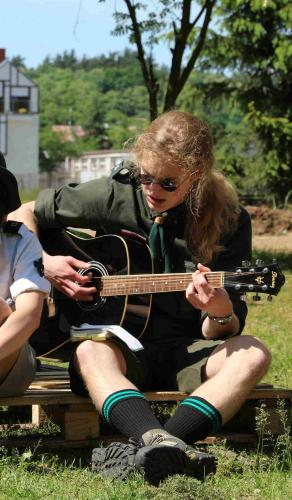

Hobbies
This section is dedicated to my interests outside of computer science.
This section is dedicated to my interests outside of computer science.
Music was a big part of my education, and even when school has finished, it is still a big part of my life, as a hobby.
I think it's big enough to get a separate paragraph.
I spent 10 years learning how to play clarinet. I did not pursue carreer in this field because I did not feel in love with the instrument. However, everything I have learned will be useful in my further musical adventures. Final chapter of my clarinet education was my recital in May 2016. I thought it would be nice to share some fragments here:
Francis Poulenc - Clarinet Sonata
Robert Schumann - Fantasiestücke, Op. 73
After obtaining a diploma I did what many clarinet players do, namely picked up the saxophone and started to play jazz. I really enjoy learning about jazz harmony. It is a subject somewhere between art and science and I find it very compelling. In order to learn more I attended International Jazz Workshops in Chodziez two times during the summer.
For many years I was playing in a rock band on a bass guitar. My love to rock and metal music persisted and currently my main musical activity is composing and recording in my bedroom. This is a solo project that is taking most of my free time. It requires immense efforts
My interest in photography started when I found an old film camera at home.
I really enjoy film photography because it forces the photographer to think twice before taking a picture.
 Tate Modern
Tate Modern Oxford
Oxford Lund, trip to ESS during my placement
Lund, trip to ESS during my placement Billy Cobham in concert
Billy Cobham in concert
Since I was 10 I was a member of a scouting organisation. Initially a scout, then an explorer I trained to become a team leader before I came to England.
Scouting taught me what is it to be a good person, about teamwork, taught me many skills, manual or not, useful in daily life. It was a great adventure without which I would be a different person.